Начертательная геометрия является технической учебной дисциплиной, изучаемой в ВУЗах. Она изучает и объясняет способы изображений пространственных форм (линий, поверхностей, тел) на области и способы решений вопросов геометрического характера по заданным изображениям указанных форм.
СПЛОШНАЯ ТОЛСТАЯ ЛИНИЯ (стл) – отображение ортогонального и аксонометрического чертежа. Это результат прямоугольного проецирования видимых зрителю ребер объёмного объекта и контуров его кривых поверхностей. Согласно гост 2.303-68 стл используется для изображения линий рамки и основной надписи чертежа.
СПЛОШНАЯ ТОНКАЯ ЛИНИЯ (стнл) – вертикальные и горизонтальные линии чертежа, соединяющие между собой следов смежных проекционных плоскостей какой-либо вершины трехмерного объекта. Стнл используются на учебных чертежах, на производственных чертежах и называются проекционными линиями связи.
ШТРИХОВАЯ ЛИНИЯ (шл) – изображение на ортогональном и аксонометрическом чертежах контуров кривых поверхностей трехмерного объекта, не видимых зрителю. Гост 2.303-68 предлагает толщину шл на половину тоньше линий видимого контура объекта, изображаемого стл. При изображении шл понимается черточка короткий отрезок.
ШТРИХПУНКТИРНАЯ ЛИНИЯ (шпл) – рисунок на ортогональном и аксонометрическом чертеже предполагаемых линий: осей вращения, координат, симметрии. Указанные линии не являются частью конструкции проецируемого объекта, они не имеют реальной материализации. Использование на чертеже различных осей уточняет графическую историю о устройстве и технологии производства 3D объекта. Подробнее о выполнении чертежей и 3D объёмного моделирования можно узнать тут. Например, изображение шпл обращает призор на симметричность частей объекта, а изображение оси вращения кривой поверхности цилиндрического отверстия указывает направление движения оси бора при изготовлении этого отверстия. Шпл представляет собой чередование коротких линий и точек. Штрих понимается как черточка, короткий отрезок, а пунктир – (.). Применение на чертеже данной линии регламентируется гостом 2.303-68, в соответствии которому линия выступает за изображение от 2 до 7 мм.
ПРОЕЦИРОВАНИЕ ПРЯМОЙ ЛИНИИ – это траектория движущейся в пространстве (.). Выделяют: кривые и прямые линии.
ПРЯМАЯ ЛИНИЯ (пл) – линия, образованная перемещением точки, не меняющей направления своего вектора в пространстве. Её положение в пространстве исследовать относительно плоскостей проекций П1, П2 и П3. Различают пл общего частного положения. ПРЯМАЯ ЛИНИЯ ОБЩЕГО ПОЛОЖЕНИЯ (плоп) – пл не ∥ ни одной из плоскостей проекций и расположенная к каждой из них под углом не равным 90о. На чертеже тень такой прямой всегда не ∥ и не ⟂ осям координат. Размер координаты Y начала прямой линии всегда больше, чем у точки ее конца. Ни одна из проекций плоп не показывает длину и угол наклона к плоскости проекций. Любая проекция такой пл меньше самой прямой. По мере удаления от наблюдателя различают восходящую и нисходящую плоп.
ВОСХОДЯЩАЯ ПРЯМАЯ ЛИНИЯ ОБЩЕГО ПОЛОЖЕНИЯ (вплоб) – пл, восходящая по мере удаления от зрителя. На чертеже размер координаты Z начала такой прямой всегда меньше, чем у точки окончания траектории этой прямой. В зависимости от того, где расположен конец вплоб, различают восходящую вправо и восходящую влево пл.
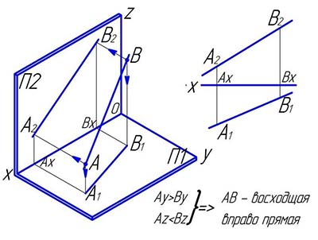
НИСХОДЯЩАЯ ПРЯМАЯ ЛИНИЯ ОБЩЕГО ПОЛОЖЕНИЯ (нплоп) – пл, убывающая по мере удаления от зрителя. На чертеже размер координаты Z начала такой прямой всегда больше, чем у точки окончания этой прямой. В зависимости от того, где расположен финиш восходящей прямой относительно наблюдателя, различают нисходящую вправо и нисходящую влево пл.
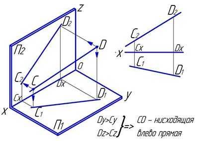
ПРЯМЫЕ ЛИНИИ ЧАСТНОГО ПОЛОЖЕНИЯ (плчп) – пл, ориентированы определенным образом относительно плоскостей проекций: ∥ и ⟂ принадлежащие плоскостям проекций.
ПРОЕЦИРУЮЩАЯ ПРЯМАЯ ЛИНИЯ (ппл) – пл, ⟂ плоскости проекций и при этом ∥ двум другим плоскостям проекций. Проекция прямой линии обращается точку на той плоскости, относительно которой отрезок ⟂, а на плоскостях проекций, которым она ∥, проецируется в натуральную величину (нв). Различают: горизонтально проецирующие, фронтально проецирующие, профильно проецирующие пл.
ГОРИЗОНТАЛЬНО ПРОЕЦИРУЮЩАЯ ПРЯМАЯ ЛИНИЯ (гппл) – пл, ⟂ горизонтальной плоскости проекций П1 и при этом ∥ фронтальной П2 и профильной П3 плоскостям проекций. Фронтальная и профильная проекции (фпп) ортогонального чертежа этой прямой равны ее нв и расположены ∥ оси координат Z, а горизонтальная проекция – (.). Размеры одноименных координат Y и X всех точек такой пл равны, а размеры координаты Z отличаются друг от друга.
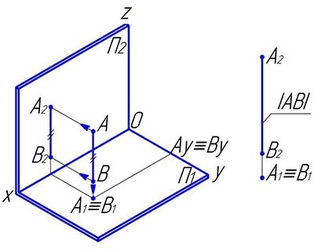
ФРОНТАЛЬНО ПРОЕЦИРУЮЩАЯ ПРЯМАЯ ЛИНИЯ (фппл) – пл, ⟂ фронтальной плоскости проекций П2 и при этом ∥ горизонтальной П1 и профильной П3 плоскостям проекций. Гпп ортогонального чертежа этой пл равны ее нв и расположены ∥ оси координат Y, а фронтальная проекция – (.). Все (.) такой прямой имеют равные одноименные размеры координат X и Z.
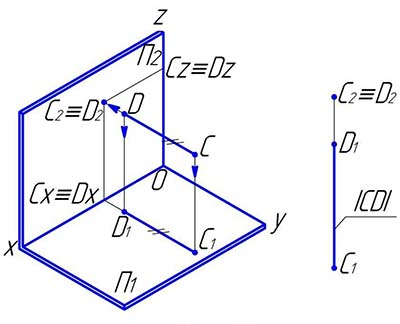
ПРОФИЛЬНО ПРОЕЦИРУЮЩАЯ ПРЯМАЯ ЛИНИЯ (пппл) – пл, ⟂ профильной плоскости проекций П3 и при этом ∥ горизонтальной П1 и фронтальной П2 плоскостям проекций. Горизонтальная и фронтальная проекции ортогонального чертежа этой прямой линии равны ее натуральной длине и расположены параллельно оси координат X, а профильная проекция – (.). Все точки такой пл имеют равные одноименные координаты Y и Z.
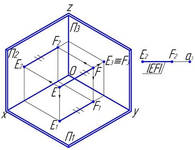
ПРЯМАЯ ЛИНИЯ УРОВНЯ (плу) – пл, ∥ одной из плоскостей проекций, на которую она проецируется без изменения, и проекция которой устанавливает углы наклона этой прямой к двум другим плоскостям проекций. При этом пл уровня не ∥ и не ⟂ двум другим плоскостям проекций и проецируется на эти плоскости с изменением размера длины. Делятся на: горизонтальную, фронтальную и профильную прямые линии уровня.
ГОРИЗОНТАЛЬНАЯ ПРЯМАЯ ЛИНИЯ УРОВНЯ (гплу) – это пл, ∥ горизонтальной плоскости проекций П1 и при этом не ∥ и не ⟂ фронтальной П2 и профильной 3 плоскостям проекций. Используется сокращенное название горизонтальное расстояние уровня, либо ее называют горизонталью и на чертеже обозначают буквой h. Так как все точки этой прямой линии равноудалены от плоскости проекций П1, то фпп прямой соответственно ∥ координатным осям X и Y. На плоскость проекций П1 горизонталь h проецируется без изменения своей длины и размеров углов наклона к плоскостям проекций П2 и П3.
ФРОНТАЛЬНАЯ ПРЯМАЯ ЛИНИЯ УРОВНЯ (фплу) – это пл, ∥ фронтальной плоскости проекций П2. Используется сокращенное название фронталь и на чертеже обозначают f. Так как все точки этой пл равноудалены от плоскости проекций П2, то гпп данной прямой соответственно ∥ координатным осям X и Z. На плоскость проекций П2 без искажения проецируется длина отрезка прямой f и углы наклона этой прямой линии к плоскостям проекций П1 и П2.
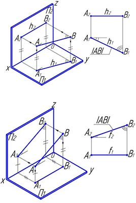
ПРОФИЛЬНАЯ ПРЯМАЯ ЛИНИЯ УРОВНЯ (пплу) – это пл, ∥ профильной плоскости проекций П3. Используется сокращенное название профильная пу, которая на чертеже обозначается p. Так как все точки этой прямой линии равноудалены от плоскости проекций П3, то гфп данной прямой соответственно параллельны координатным осям Y и Z. На плоскость П3 проецируются без искажения отрезок этой прямой p и углы наклона прямой к плоскостям проекций П1 и П2. Если пплу, удаляясь от наблюдателя, поднимается, то называют восходящей. Если же пплу от наблюдателя удаляется вниз, то она считается нисходящей.
ЛИНИИ НУЛЕВОГО УРОВНЯ (лну) – пл, принадлежащие плоскостям проекций. Это частный случай горизонтальных, фронтальных и профильных прямых линий уровня. Они обозначаются: h0, f0, p0. Так как данные линии находятся на поверхностях плоскостей проекций, то одна из координат (.) этих прямых равна 0. На эпюре две проекции лну конкурируют с осями координат, а третья проекция дает возможность определить нв этой прямой и углы наклона к плоскостям проекций.
СЛЕД ПРЯМОЙ ЛИНИИ (спл) – (.), в которой она пересекается с плоскостью проекций, т.е. (.), принадлежащая одновременно и прямой и плоскости проекций. Следы прямой являются (.) частного положения, в них пл переходит из одного октанта в другой. В общем случае пл может пересекать все три плоскости проекций и иметь три следа. Так как спл принадлежит плоскости проекций, одна из его координат равна 0. Различают: горизонтальный, фронтальный и профильный следы прямой.
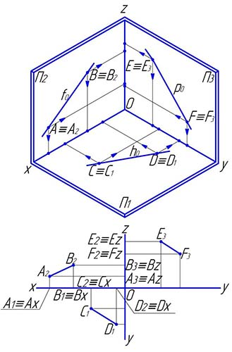
ВЗАИМНОЕ ПРОСТРАНСТВЕННОЕ РАСПОЛОЖЕНИЕ ПРЯМЫХ ЛИНИЙ
ПЕРЕСЕКАЮЩИЕСЯ ПРЯМЫЕ ЛИНИИ (ппл) – это пл, имеющие одну общую (.). Проекция (.) пересечения прямых линий есть (.) пересечения проекций этих прямых. Проекции (.) пересечения пл на смежных плоскостях проекций лежат на одной проекционной линии связи, перпендикулярной оси координат.
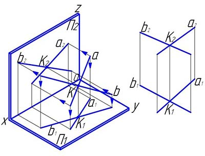
СКРЕЩИВАЮЩИЕСЯ ПРЯМЫЕ ЛИНИИ (спл) – это пл, не пересекающиеся и не ∥ между собой, лежащие в двух ∥ плоскостях. На эпюре точки пересечения проекций этих прямых линий не лежат на одном отрезке проекционной связи. Для определения какая из изображенных на чертеже пл выше другой или ближе другой к наблюдателю анализируют положение конкурирующих (.) этих прямых.
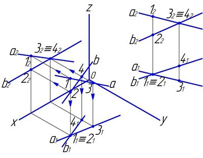
Если через спл можно провести проецирующие плоскости, то тогда тени этих прямых будут ∥ на плоскости проекций, которой были ⟂ вводимые плоскости.
ПАРАЛЛЕЛЬНЫЕ ПРЯМЫЕ ЛИНИИ (ппл) – пл, расположенные в одной плоскости на не меняющемся расстоянии друг от друга на всем своем протяжении. ппл пересекаются только в несобственной (.). Проекции ппл на любую плоскость проекций – ∥. Особый случай представляют собой пл, ∥ одной из плоскостей проекций. Для оценки взаимного положения таких пл следует построить эпюр.
КОНКУРИРУЮЩИЕ ПРЯМЫЕ ЛИНИИ (кпл) – пл, расположенные в одной проецирующей плоскости, т.е. в плоскости ⟂ какой-либо плоскости проекций. На чертеже кпл проецируются в одну линию на одной из плоскостей проекций. Конкурирующими могут быть пересекающиеся или ∥ прямые, но не скрещивающиеся. В зависимости от положения проецирующей плоскости, в которой расположены пл, разделяют их на: горизонтально конкурирующие, фронтально конкурирующие и профильно конкурирующие пл.
ГОРИЗОНТАЛЬНО КОНКУРИРУЮЩИЕ ПРЯМЫЕ ЛИНИИ (гкпл) – пл, расположенные на поверхности плоскости ⟂ горизонтальной плоскости проекций П1. Горизонтальные проекции таких пл конкурируют с горизонтальным следом плоскости, которой они принадлежат.
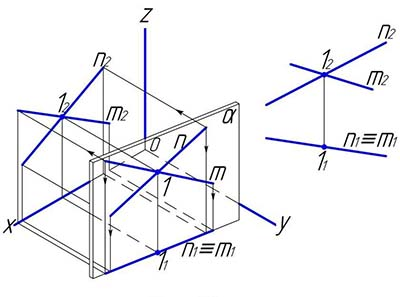
ФРОНТАЛЬНО КОНКУРИРУЮЩИЕ ПРЯМЫЕ ЛИНИИ (фкпл) – пл, расположенные на поверхности фронтально проецирующей плоскости. Фп таких пл совмещены с фронтальным следом плоскости, которой они принадлежат.
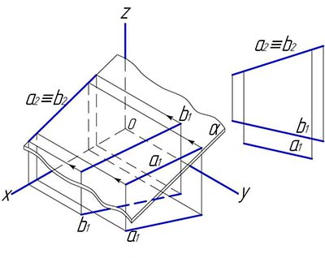
ПРОФИЛЬНО КОНКУРИРУЮЩИЕ ПРЯМЫЕ ЛИНИИ (пкпл) – пл, расположенные на поверхности профильной проецирующей плоскости. Пп таких пл совмещены с профильным следом плоскости, которой они принадлежат.
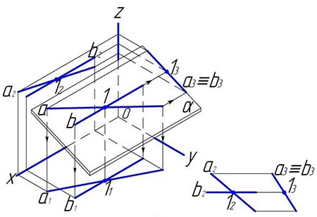
ПЕРПЕНДИКУЛЯРНЫЕ ПРЯМЫЕ ЛИНИИ (ппл) – пл, образующие в пространстве прямой угол. Прямой угол могут образовывать не только пересекающиеся, но и скрещивающиеся пл. Угол, образуемый скрещивающимися пл, равен углу между ⟂ друг другу проецирующими плоскостями, в которых они находятся. Если две прямые пересекаются под прямым углом, то следы их в общем случае образуют угол, не равный 900. Для того чтобы прямой угол проецировался в истинную величину, необходимо и достаточно, чтобы одна из его сторон была ∥, а другая не ⟂ плоскости проекций. Если под прямым углом пересекаются линии общего положения, то решение задачи сводится к преобразованию одной из сторон прямого угла в линию уровня.
ТЕОРЕМА ОБ ОРТОГОНАЛЬНОЙ ПРОЕКЦИИ ПРЯМОГО УГЛА: если одна из сторон прямого угла ∥ плоскости проекций, а другая ей не перпендикулярна, то прямой угол проецируется ортогонально на эту плоскость проекций без искажения, т.е. прямым углом.
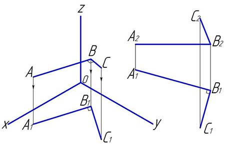
Если ни одна из сторон прямого угла не является линией уровня, то необходимо преобразование чертежа, например, заменой плоскостей проекций.